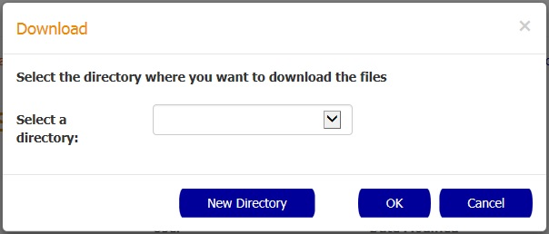
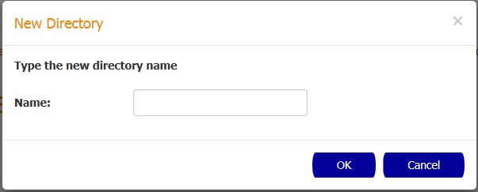

This page displays the document details and allows you to download the source file and the attachments associated to it
How to download the source document
In order to download the source document, you need to click the Download button.

In the Download popup select the predefined destination folder by selecting a folder name in the Destination folder dropdown, and then confirm the action by pressing the OK button.
You can also create a new folder by selecting the New Directory button and entering the new folder name in the New Directory popup.

How to download an attachment document
In order to download an attachment document, you need to click the attachment name you want to download.
In the Download popup select the predefined destination folder by selecting a folder name in the Destination folder dropdown, and then confirm the action by pressing the OK button.
You can also create a new folder by selecting the New Directory button and entering the new folder name in the New Directory popup.